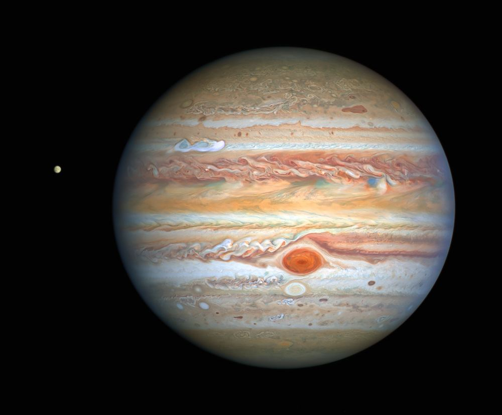
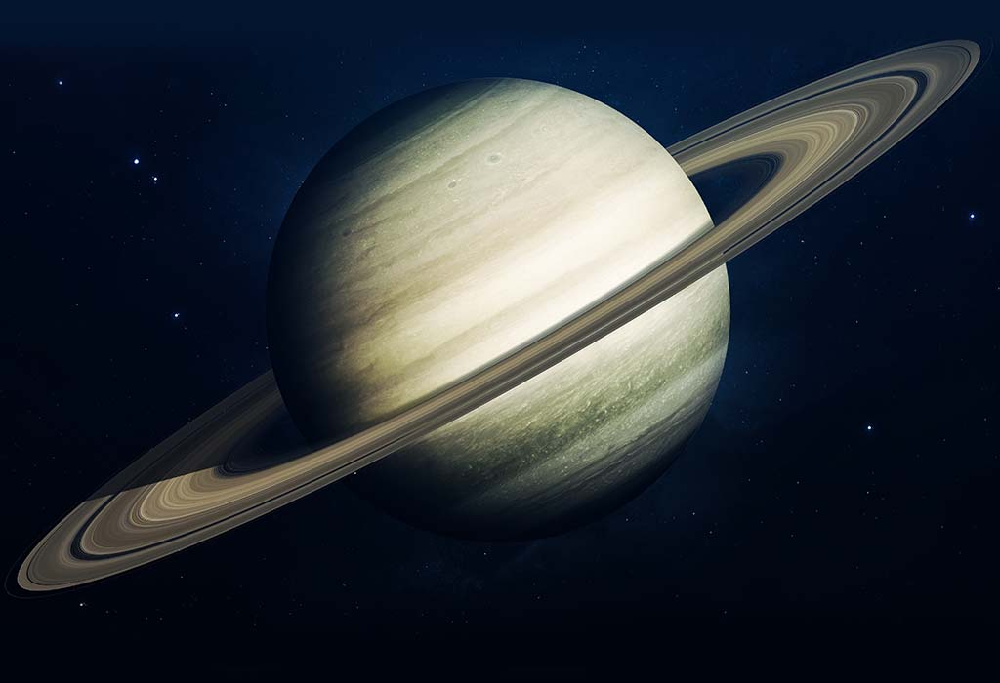
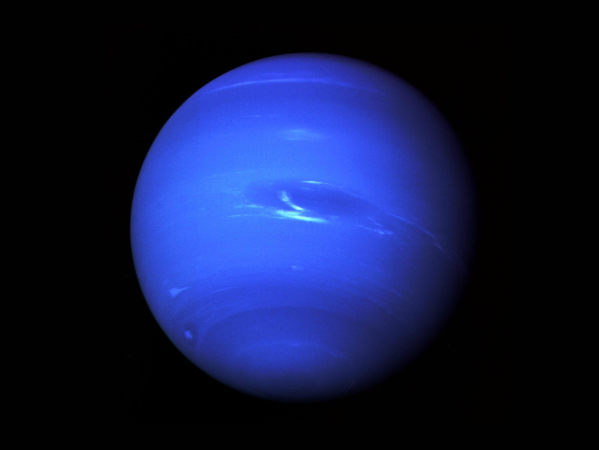
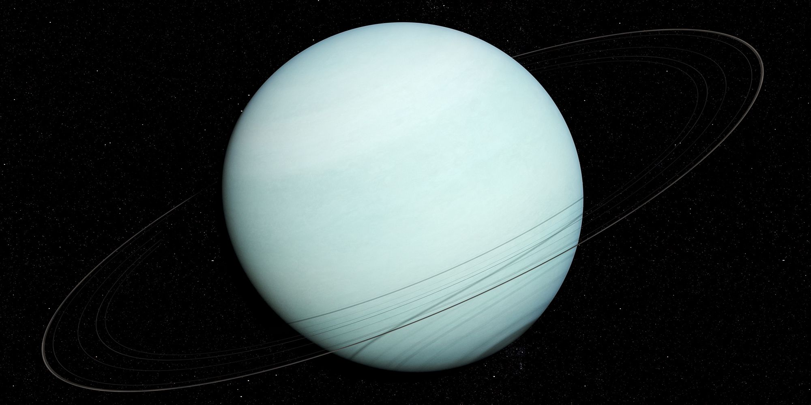

Mars is the fourth planet from the Sun and the second-smallest planet in
the Solar System, being larger than only Mercury. In English, Mars
carries the name of the Roman god of war and is often referred to as the
"Red Planet".The latter refers to the effect of the iron oxide prevalent
on Mars's surface, which gives it a reddish appearance distinctive among
the astronomical bodies visible to the naked eye. Mars is a terrestrial
planet with a thin atmosphere, with surface features reminiscent of the
impact craters of the Moon and the valleys, deserts and polar ice caps
of Earth. The days and seasons are comparable to those of Earth, because
the rotational period as well as the tilt of the rotational axis
relative to the ecliptic plane are similar. Mars is the site of Olympus
Mons, the largest volcano and highest known mountain on any planet in
the Solar System, and of Valles Marineris, one of the largest canyons in
the Solar System. The smooth Borealis basin in the northern hemisphere
covers 40% of the planet and may be a giant impact feature. Mars has two
moons, Phobos and Deimos, which are small and irregularly shaped. These
may be captured asteroids, similar to 5261 Eureka, a Mars trojan. Mars
has been explored by several uncrewed spacecraft. Mariner 4 was the
first spacecraft to visit Mars; launched by NASA on 28 November 1964, it
made its closest approach to the planet on 15 July 1965. Mariner 4
detected the weak Martian radiation belt, measured at about 0.1% that of
Earth, and captured the first images of another planet from deep space.
The Soviet Mars 3 mission included a lander, which achieved a soft
landing in December 1971; however, contact was lost seconds after
touchdown. On 20 July 1976, Viking 1 performed the first successful
landing on the Martian surface. On 4 July 1997, the Mars Pathfinder
spacecraft landed on Mars and on 5 July released its rover, Sojourner,
the first robotic rover to operate on Mars. The Mars Express orbiter,
the first European Space Agency (ESA) spacecraft to visit Mars, arrived
in orbit on 25 December 2003. In January 2004, the Mars Exploration
Rovers, named Spirit and Opportunity, both landed on Mars. Spirit
operated until 22 March 2010 and Opportunity lasted until 10 June 2018.
On 24 September 2014, the Indian Space Research Organisation (ISRO)
became the fourth space agency to visit Mars when its maiden
interplanetary mission, the Mars Orbiter Mission spacecraft, arrived in
orbit. There are investigations assessing the past habitability of Mars,
as well as the possibility of extant life. Astrobiology missions are
planned, including the Perseverance and Rosalind Franklin rovers. Liquid
water on the surface of Mars cannot exist due to low atmospheric
pressure, which is less than 1% of the atmospheric pressure on Earth,
except at the lowest elevations for short periods. The two polar ice
caps appear to be made largely of water. The volume of water ice in the
south polar ice cap, if melted, would be sufficient to cover the
planetary surface to a depth of 11 metres (36 ft). In November 2016,
NASA reported finding a large amount of underground ice in the Utopia
Planitia region. The volume of water detected has been estimated to be
equivalent to the volume of water in Lake Superior. Mars can easily be
seen from Earth with the naked eye, as can its reddish coloring. Its
apparent magnitude reaches −2.94, which is surpassed only by Venus, the
Moon and the Sun. Optical ground-based telescopes are typically limited
to resolving features about 300 kilometres (190 mi) across when Earth
and Mars are closest because of Earth's atmosphere.

Jupiter is the fifth planet from the Sun and the largest in the Solar
System. It is a gas giant with a mass one-thousandth that of the Sun,
but two-and-a-half times that of all the other planets in the Solar
System combined. Jupiter is one of the brightest objects visible to the
naked eye in the night sky, and has been known to ancient civilizations
since before recorded history. It is named after the Roman god Jupiter.
When viewed from Earth, Jupiter can be bright enough for its reflected
light to cast visible shadows, and is on average the third-brightest
natural object in the night sky after the Moon and Venus. Jupiter is
primarily composed of hydrogen with a quarter of its mass being helium,
though helium comprises only about a tenth of the number of molecules.
It may also have a rocky core of heavier elements, but like the other
giant planets, Jupiter lacks a well-defined solid surface. Because of
its rapid rotation, the planet's shape is that of an oblate spheroid (it
has a slight but noticeable bulge around the equator). The outer
atmosphere is visibly segregated into several bands at different
latitudes, resulting in turbulence and storms along their interacting
boundaries. A prominent result is the Great Red Spot, a giant storm that
is known to have existed since at least the 17th century when it was
first seen by telescope. Surrounding Jupiter is a faint planetary ring
system and a powerful magnetosphere. Jupiter has 79 known moons,
including the four large Galilean moons discovered by Galileo Galilei in
1610. Ganymede, the largest of these, has a diameter greater than that
of the planet Mercury. Pioneer 10 was the first spacecraft to visit
Jupiter, making its closest approach to the planet on December 4, 1973;
Pioneer 10 identified plasma in Jupiter's magnetic field and also found
that Jupiter's magnetic tail was nearly 800 million kilometers long,
covering the entire distance to Saturn. Jupiter has been explored on a
number of occasions by robotic spacecraft, beginning with the Pioneer
and Voyager flyby missions from 1973 to 1979, and later by the Galileo
orbiter, which arrived at Jupiter in 1995. In late February 2007,
Jupiter was visited by the New Horizons probe, which used Jupiter's
gravity to increase its speed and bend its trajectory en route to Pluto.
The latest probe to visit the planet is Juno, which entered into orbit
around Jupiter on July 4, 2016. Future targets for exploration in the
Jupiter system include the probable ice-covered liquid ocean of its moon
Europa.
Mercury is the smallest and innermost planet in the Solar System. Its
orbit around the Sun takes 87.97 days, the shortest of all the planets
in the Solar System. It is named after the Greek god Hermes , translated
into Latin Mercurius Mercury, god of commerce, messenger of the gods,
mediator between gods and mortals. Like Venus, Mercury orbits the Sun
within Earth's orbit as an inferior planet, and its apparent distance
from the Sun as viewed from Earth never exceeds 28°. This proximity to
the Sun means the planet can only be seen near the western horizon fter
sunset or eastern horizon before sunrise, usually in twilight. At this
time, it may appear as a bright star-like object, ut is often far more
difficult to observe than Venus. The planet telescopically displays the
complete range of phases, similar to Venus and the Moon, as it moves in
its inner orbit relative to Earth, which recurs over its synodic period
of approximately 116 days. Mercury rotates in a way that is unique in
the Solar System. It is tidally locked with the Sun in a 3:2 spin–orbit
resonance, meaning that relative to the fixed stars, it rotates on its
axis exactly three times for every two revolutions it makes around the
Sun. As seen from the Sun, in a frame of reference that rotates with the
orbital motion, it appears to rotate only once every two Mercurian
years. An observer on Mercury would therefore see only one day every two
Mercurian years. Mercury's axis has the smallest tilt of any of the
Solar System's planets (about 1⁄30 degree). Its orbital eccentricity is
the largest of all known planets in the Solar System; at perihelion,
Mercury's distance from the Sun is only about two-thirds (or 66%) of its
distance at aphelion. Mercury's surface appears heavily cratered and is
similar in appearance to the Moon's, indicating that it has been
geologically inactive for billions of years. Having almost no atmosphere
to retain heat, it has surface temperatures that vary diurnally more
than on any other planet in the Solar System, ranging from 100 K (−173
°C; −280 °F) at night to 700 K (427 °C; 800 °F) during the day across
the equatorial regions. The polar regions are constantly below 180 K
(−93 °C; −136 °F). The planet has no known natural satellites.

earth saturn neptune uranus Saturn is the sixth planet from the Sun and
the second-largest in the Solar System, after Jupiter. It is a gas giant
with an average radius of about nine times that of Earth. It only has
one-eighth the average density of Earth; however, with its larger
volume, Saturn is over 95 times more massive . Saturn is named after the
Roman god of wealth and agriculture; its astronomical symbol represents
the god's sickle. Saturn's interior is most likely composed of a core of
iron–nickel and rock (silicon and oxygen compounds). Its core is
surrounded by a deep layer of metallic hydrogen, an intermediate layer
of liquid hydrogen and liquid helium, and finally a gaseous outer layer.
Saturn has a pale yellow hue due to ammonia crystals in its upper
atmosphere. An electrical current within the metallic hydrogen layer is
thought to give rise to Saturn's planetary magnetic field, which is
weaker than the Earth's, but has a magnetic moment 580 times that of
Earth due to Saturn's larger size. Saturn's magnetic field strength is
around one-twentieth of Jupiter's. The outer atmosphere is generally
bland and lacking in contrast, although long-lived features can appear.
Wind speeds on Saturn can reach 1,800 km/h (1,100 mph; 500 m/s), higher
than on Jupiter, but not as high as those on Neptune. In January 2019,
astronomers reported that a day on the planet Saturn has been determined
to be10h 33m 38s + 1m 52s − 1m 19s , based on studies of the planet's C
Ring. The planet's most famous feature is its prominent ring system,
which is composed mostly of ice particles, with a smaller amount of
rocky debris and dust. At least 82 moons are known to orbit Saturn, of
which 53 are officially named; this does not include the hundreds of
moonlets in its rings. Titan, Saturn's largest moon, and the
second-largest in the Solar System, is larger than the planet Mercury,
although less massive, and is the only moon in the Solar System to have
a substantial atmosphere.

Neptune is the eighth and farthest-known Solar planet from the Sun. In
the Solar System, it is the fourth-largest planet by diameter, the
third-most-massive planet, and the densest giant planet. It is 17 times
the mass of Earth, slightly more massive than its near-twin Uranus.
Neptune is denser and physically smaller than Uranus because its greater
mass causes more gravitational compression of its atmosphere. The planet
orbits the Sun once every 164.8 years at an average distance of 30.1 AU
(4.5 billion km; 2.8 billion mi). It is named after the Roman god of the
sea and has the astronomical symbol ♆, a stylised version of the god
Neptune's trident. Neptune is not visible to the unaided eye and is the
only planet in the Solar System found by mathematical prediction rather
than by empirical observation. Unexpected changes in the orbit of Uranus
led Alexis Bouvard to deduce that its orbit was subject to gravitational
perturbation by an unknown planet. After Bouvard's death, the position
of Neptune was predicted from his observations, independently, by John
Couch Adams and Urbain Le Verrier. Neptune was subsequently observed
with a telescope on 23 September 1846 by Johann Galle within a degree of
the position predicted by Le Verrier. Its largest moon, Triton, was
discovered shortly thereafter, though none of the planet's remaining 13
known moons were located telescopically until the 20th century. The
planet's distance from Earth gives it a very small apparent size, making
it challenging to study with Earth-based telescopes. Neptune was visited
by Voyager 2, when it flew by the planet on 25 August 1989; Voyager 2
remains the only spacecraft to visit Neptune. The advent of the Hubble
Space Telescope and large ground-based telescopes with adaptive optics
has recently allowed for additional detailed observations rom afar. Like
Jupiter and Saturn, Neptune's atmosphere is composed primarily of
hydrogen and helium, along with traces of hydrocarbons and possibly
nitrogen, though it contains a higher proportion of "ices" such as
water, ammonia and methane. However, similar to Uranus, its interior is
primarily composed of ices and rock; Uranus and Neptune are normally
considered "ice giants" to emphasise this distinction. Traces of methane
in the outermost regions in part account for the planet's blue
appearance.

Uranus is the seventh planet from the Sun. Its name is a reference to
the Greek god of the sky, Uranus, who, according to Greek mythology, was
the grandfather of Zeus (Jupiter) and father of Cronus (Saturn). It has
the third-largest planetary radius and fourth-largest planetary mass in
the Solar System. Uranus is similar in composition to Neptune, and both
have bulk chemical compositions which differ from that of the larger gas
giants Jupiter and Saturn. For this reason, scientists often classify
Uranus and Neptune as "ice giants" to distinguish them from the other
gas giants. Uranus's atmosphere is similar to Jupiter's and Saturn's in
its primary composition of hydrogen and helium, but it contains more
"ices" such as water, ammonia, and methane, along with traces of other
hydrocarbons. It has the coldest planetary atmosphere in the Solar
System, with a minimum temperature of 49 K (−224 °C; −371 °F), and has a
complex, layered cloud structure with water thought to make up the
lowest clouds and methane the uppermost layer of clouds. The interior of
Uranus is mainly composed of ices and rock. Like the other giant
planets, Uranus has a ring system, a magnetosphere, and numerous moons.
The Uranian system has a unique configuration because its axis of
rotation is tilted sideways, nearly into the plane of its solar orbit.
Its north and south poles, therefore, lie where most other planets have
their equators. In 1986, images from Voyager 2 showed Uranus as an
almost featureless planet in visible light, without the cloud bands or
storms associated with the other giant planets. Voyager 2 remains the
only spacecraft to visit the planet. Observations from Earth have shown
seasonal change and increased weather activity as Uranus approached its
equinox in 2007. Wind speeds can reach 250 metres per second (900 km/h;
560 mph).